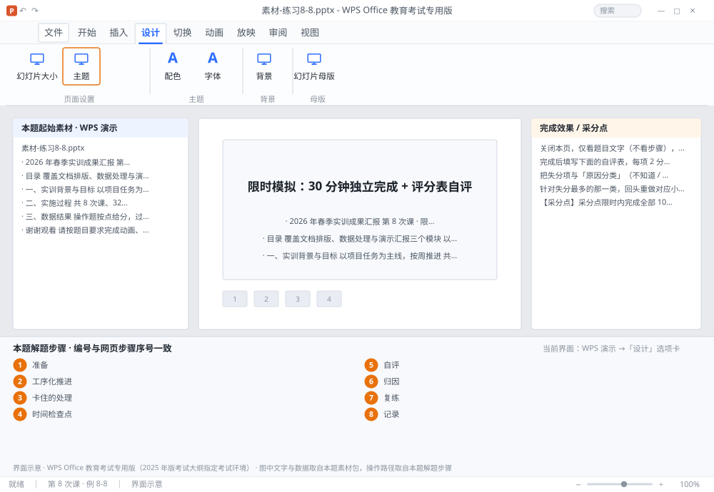

完成比对文档 · 例 8-8
限时模拟：30 分钟独立完成 + 评分表自评 ｜ 第 8 次课 / WPS 演示 ｜ 网页：实操-演示2.html ｜ 考试环境：WPS Office 教育考试专用版（2025 年版考试大纲指定考试环境）
用途 本页按修订后的题目要求与解题步骤生成，是交卷自查的结果基准：
逐项列出每一步应出现的可复核结果，配合模拟操作截图与解题结果文件使用。
它不是素材包的一部分，不会预置答案动作；起始素材仍从本题素材包下载。
一、本题起始素材包
目录：练习素材/练习8-8-限时模拟与自评/ ｜
下载包：练习素材/下载/练习8-8-限时模拟与自评.zip
素材-练习8-8.pptx评分表.xlsx素材说明.txt
二、题目要求
- 关闭本页，仅看题目文字（不看步骤），在 30 分钟内独立完成第 8-7 题的全部要求。
- 完成后填写下面的自评表，每项 2 分，满分 20 分。
- 把失分项与「原因分类」（不知道 / 知道但找不到 / 找到但设错 / 时间不够）对应起来。
- 针对失分最多的那一类，回头重做对应小节（8-1~8-6）的例题。
- 记录本次用时与得分，作为考前复盘的基线。
三、解题步骤（编号与下方核对表、截图编号一致）
- 准备。新建空白文件，清空桌面，只留题目要求。计时开始（用页面右下角的 45:00 计时器，按到 30:00 时停）。
- 工序化推进。严格按「母版 → 主题 → 结构 → 内容 → 图表 → 动画 → 切换 → 链接 → 输出」的顺序，不要在某一页上反复美化。
- 卡住的处理。任何一步卡住超过 2 分钟，先跳过，把后面的步骤做完，最后回来补——演示题按点给分，跳过损失的只是 1~2 分，卡住损失的是时间。
- 时间检查点。第 10 分钟应完成母版与主题；第 20 分钟应完成内容与图表；第 26 分钟应完成动画与切换；最后 4 分钟做链接与输出。
- 自评。对照 8-7 的 10 项采分点，每项 2 分，逐项打勾或打叉。不要估分，要逐项看。
- 归因。每个叉按四类归因：① 不知道有这功能；② 知道但找不到菜单；③ 找到但参数设错；④ 时间不够没做。① 要回看知识点，② 要背菜单位置，③ 要重做一遍参数，④ 要练工序速度。
- 复练。针对得分最低的一节，重做该节的 2 道例题（不看步骤），再做一次 8-7。
- 记录。把「日期 / 用时 / 得分 / 主要失分项」写在自己的错题本上，考前一天只看这一行。
四、完成效果 / 采分点
采分点限时内完成全部 10 项要求（每项 2 分，满分 20） · 自评表逐项填写（不估分） · 失分项完成四类归因 · 已针对最弱一节完成复练
五、逐项完成核对表
| 步骤 | 关键操作路径 | 应出现的结果（可复核） |
|---|
| 1 | 准备 | 准备 |
| 2 | 工序化推进 | 工序化推进 |
| 3 | 卡住的处理 | 2 分 |
| 4 | 时间检查点 | 10 分、20 分、26 分、4 分 |
| 5 | 自评 | 2 分 |
| 6 | 归因 | 归因 |
| 7 | 复练 | 复练 |
| 8 | 记录 | 记录 |
六、模拟操作截图

界面示意 · WPS Office 教育考试专用版 · 橙色编号与本题解题步骤序号一致；
图中文字与数据取自本题素材包，功能入口取自本题解题步骤。
核对方法：按网页解题步骤完成并另存自己的成稿后，逐行比对本表第 3 列的
参数、公式、区域、文件名与对象数量；再对照网页「完成效果 / 采分点」检查版式是否一致。